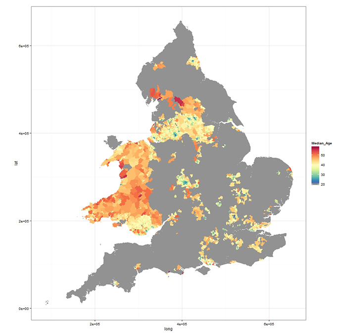

Guest post: A step forward for democratic engagement
Even after the local council elections in England and Northern Ireland on 22 May, which coincided with polling for the European Parliament, the next 12 months remain a busy time for the democratic process in the United Kingdom. In September, the people of Scotland make their choice in a referendum on the future of the Union. Finally, the first fixed-term parliament in Westminster comes to an end with a General Election in all areas of Great Britain and Northern Ireland in May 2015.
To ensure that as many people as possible are eligible and able to vote, the Government is launching an ambitious programme of Individual Electoral Registration (IER) this summer. This will mean that the traditional, paper-based approach to household registration will shift to a tailored and largely digital process more in-keeping with the data-driven demands of the twenty-first century. Under IER, citizens will need to provide ‘identifying information’, such as date of birth or national insurance number, when applying to register.
Ballots: stuck in the past?
However, despite the Government’s attempts through IER to improve the veracity of information captured prior to ballots being posted, little has changed in terms of the vision for capturing, distributing and analysing digital data from election day itself. Indeed, paper is still the chosen medium for data collection.
Digitising elections is fraught with difficulty, though. In the United States, for example, the introduction of new voting machines created much controversy even though they are capable of providing ‘near-perfect’ ballot data.
The UK’s democratic process is not completely blind, though. Numerous opinion surveys are conducted both before and after polling, including the long-running British Election Study, to understand the shifting attitudes of a representative cross-section of the electorate.
But if the Government does not retain in sufficient geographic detail digital information on the number of people who vote, then how can it learn what is necessary to reverse the long-running decline in turnout?.
The effects of lack of data
To add to the debate around democratic engagement, a joint research team, with data scientists from Deloitte and the Open Data Institute, have been attempting to understand what makes voters tick.
Our research has been hampered by a significant lack of relevant data describing voter behaviour at electoral ward level, as well as difficulties in matching what little data is available to other open data sources, such as demographic data from the 2011 Census. A ward is an administrative division of a city or borough that typically elects and is represented by a councillor or councillors.
Even though individual ballot papers are collected and verified for counting the number of votes per candidate – the primary aim of elections, after all – the only recent elections for which aggregate turnout statistics have been published at ward level are the 2012 local council elections in England and Wales. In these elections, approximately 3,000 wards from a total of over 8,000 voted. Data published by the Electoral Commission for the 2013 local council elections in England and Wales purports to be at ward level but is, in fact, for ‘county electoral divisions’, as explained here
Moreover, important factors related to the accessibility of polling stations – such as the distance from main population centres – could not be assessed because the location of polling stations remains the responsibility of individual local authorities – and only eight of these have so far published their data as open data.
Given these fundamental limitations, drawing any robust conclusions is difficult. Nevertheless, our research shows the potential for forecasting electoral turnout with relatively few census variables, the most significant of which are age and the size of the electorate in each ward.
 Median age by ward
Turnout percentage by ward
[NB: Only showing those wards that voted in the 2012 local council elections]
Wards with a high proportion of older people in the electorate tended to experience higher turnout in the 2012 elections. Younger electorates, on the other hand, experienced lower turnout. The challenge for policy makers here is that although young people remain interested in politics, they are disengaged and disillusioned with the electoral process – preferring instead to express their individual opinions via social media.
In addition, the highest turnouts in the local council elections of 2012 were achieved in wards with a small electorate. One of the reasons for this may be that a community ‘network effect’ is more effective in rural wards. From a statistical perspective, there is a greater likelihood that small wards may experience results that deviate significantly from average turnout, which has very little to do with causal factors.
What role can open data play?
The limited results described above provide a tantalising glimpse into a possible future scenario: where open data provides a deeper and more granular understanding of electoral behaviour. On the back of more sophisticated analyses, policies for improving democratic engagement – particularly among young people – have the potential to become focused and evidence-driven. And, although the data captured on election day will always remain primarily for the use of electing the public’s preferred candidate, an important secondary consideration is aggregating and publishing data that can be used more widely. This may have been prohibitively expensive or too complex in the past but as storage and processing costs continue to fall, and the appetite for such knowledge grows, there is a compelling business case.
The benefits of this future scenario potentially include:
- tailoring awareness and marketing campaigns to wards and other segments of the electorate most likely to respond positively and subsequently turn out to vote
- increasing the efficiency with which European, general and local elections are held in the UK
- improving transparency around the electoral process and stimulating increased democratic engagement
- enhancing links to the Government’s other significant data collection activities, including the Census.
Achieving these benefits requires commitment to electoral data being collected and published in a systematic fashion at least at ward level. This would link work currently undertaken by the Electoral Commission, the Office for National Statistics, Plymouth University’s Election Centre, the British Election Study and the more than 400 Local Authorities across the UK.
Harvey Lewis, Deloitte.
Ulrich Atz, Gianfranco Cecconi, Tom Heath, the Open Data Institute.
In this article, references to Deloitte are references to Deloitte LLP, the UK member firm of DTTL.